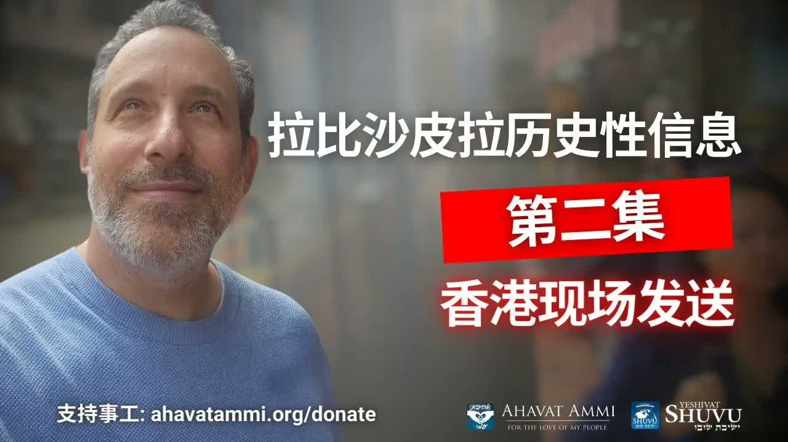

外壳已在中国掰开 ── 香港历史性信息第二集 The Outer Shells Have Been Cracked in China — Historic Hong Kong Message, Part 2
从香港的高处开讲，拉比沙皮拉博士把罗马书十一章接上犹太历法中「树木的新年」Tu B'Shvat，并引入一个非常少听到的概念——Acharei Aklimot（在「众端」之后），宣告：「外壳现在已经在中国被掰开」，这是中国历史性的时刻。 Speaking live from the heights of Hong Kong on his way into mainland China, Rabbi Dr. Shapira connects Romans 11 to Tu B'Shvat — the Jewish New Year of the Trees — and introduces a rarely-heard concept, Acharei Aklimot (“after the climaxes”), declaring: “the outer shells have been cracked open in China.” This, he says, is China's historic moment.
「安息日平安，中国！」拉比沙皮拉博士从香港的高处开场——飞机声在背景里嗡嗡作响，镜头之外是一个挤满了人的二楼空间，因为安全考量没有公开拍摄。这是他「历史性信息」的第二集——延续昨天关于罗马书十一章与树木的新年 (Tu B'Shvat, ט״ו בשבט) 的教导，他要把听众带入一个更深的概念：「Acharei Aklimot」（אחרי אקלימות，「在众端/众结局之后」）。这是一个不常听到的希伯来词——拉比用它来描述「在所有时代的高潮一一过去之后」那个最后的时刻，也就是外壳被掰开、果仁显露的时刻。他说：「外壳现在已经在中国被掰开。今天就相信吧！」本文是这场讲解的纵深展开：四个新年、塔木德的方法、「以色列沙拉」式的解经病、Acharei Aklimot 的份量、以及为何先知所言「众海岛与众民」如今正落在中国土地上。 “Shabbat Shalom, China!” Rabbi Dr. Shapira opens from a rooftop in Hong Kong — the drone of aircraft humming in the background, just outside the frame a second-storey room packed past capacity, kept off-camera for safety. This is Part 2 of his “historic message” — picking up yesterday's thread that connected Romans 11 with Tu B'Shvat (ט״ו בשבט), the Jewish New Year of the Trees. Tonight he is going deeper, into a Hebrew phrase most listeners have never heard: Acharei Aklimot (אחרי אקלימות, “after the climaxes / after the conclusions”). It is the rabbi's name for the final moment in history — the moment when every era's high tide has already crested and receded, the moment when the outer shells are cracked open and the kernel is revealed. He says it plainly: “The outer shells have now been cracked open in China. Believe today!” What follows is the long arc of that teaching: the four New Years, the Talmudic method, the disease of “Israeli-salad” exegesis, the weight of Acharei Aklimot, and why the prophet's “coastlands and peoples from afar” are landing today on Chinese soil.
一、从香港的高处 ── 一个属灵的「上升」I. From the Heights of Hong Kong — A Spiritual Aliyah
拉比沙皮拉博士开场就强调一个细节：他不是在工作室里讲课，他是在香港最高处的一个屋顶上讲课，背景是飞机的声音。「你听到飞机的声音，因为我们在这个地方的最高点。」这不是随便一句寒暄——在拉比的解读里，「高处」是一个属灵的隐喻：神正在呼召华人「上升到更高的境界」。 Rabbi Shapira opens by drawing attention to a detail: he is not teaching from a studio. He is teaching from a rooftop at the highest point in Hong Kong — aircraft passing overhead. “You can hear the planes, because we are at the highest point here.” This is not throwaway atmosphere. In his reading, the high place is a spiritual figure: God is calling the Chinese people to “ascend to a higher realm.”
「这就是对中国人的呼召——要上升到更高的境界。如果你在香港，请来加入我们吧！来到中国，跟我们一起碰面吧！这是一个非常具有历史性的时代。」——沙皮拉拉比博士 “This is the call to the Chinese people — ascend to a higher place. If you are in Hong Kong, please come and join us! Come to China and meet with us! This is a deeply historic time.”— Rabbi Dr. Itzhak Shapira
希伯来文里有一个专门的词来形容这种「向上的移动」：Aliyah（עלייה，「上行」）。它原本是指犹太人「上行回到故土」——但在更广的属灵语境里，Aliyah 指任何「从低处上升到高处」、「从外院走进至圣所」的属灵移动。拉比此刻所发出的，正是这种Aliyah 式的邀请：从远观，到亲临；从听众，到弟兄；从外院，到内殿。 Hebrew has a dedicated word for this kind of upward movement: Aliyah (עלייה, “ascent”). It originally describes Jews going up back to the Land — but in the wider spiritual sense, Aliyah names any movement from low to high, from outer court to holy place. What the rabbi issues here is exactly that kind of summons: from spectator to brother, from outer court to inner sanctuary.
二、罗马书十一章 × 树木新年 ── 一座意想不到的桥II. Romans 11 × Tu B'Shvat — An Unexpected Bridge
上一集（第一集）拉比已经为听众架起了一座桥：把罗马书十一章——保罗关于「外邦人被嫁接进入橄榄树」的伟大宣言——与Tu B'Shvat（ט״ו בשבט，「树木的新年」）这个犹太节期连起来。本集第二节，他要继续这个连结，并把听众带入一个更深的概念。 In Part 1, the rabbi had already raised a bridge between two ideas: Romans 11 — Paul's great declaration that Gentiles are grafted into the olive tree — and Tu B'Shvat (ט״ו בשבט, the Jewish New Year of the Trees). Tonight, in the second lesson, he continues that bridge and takes the listener deeper.
为什么罗马书十一章要在「树木新年」上展开？因为保罗用的「嫁接」(engrafting) 不是一个泛泛的比喻——它是一个真实的农艺动作：把一根野枝插进一棵成熟的橄榄树，让野枝从树根吸取它从未有过的汁液。这个动作有一个最佳的时机——希伯来传统说：就是树木的新年。所以当保罗写罗马书十一章的时候，他脑中的图景极有可能就是 Tu B'Shvat 的农艺图景。 Why must Romans 11 open up on the New Year of the Trees? Because Paul's word — engrafted — is not a loose metaphor. It is a real arboricultural action: a wild branch slipped into a mature olive tree, drawing a sap it never had from the trunk. The graft has an optimal time — and Hebrew tradition says it is precisely on Tu B'Shvat. So when Paul wrote Romans 11, the image in his mind was likely the arboriculture of the New Year of the Trees.
「我们昨天看到了罗马书十一章，还有树木新年的这个连结。我们今天会进入这堂课的第二节——就是这个概念叫做 Acharei Aklimot。」——沙皮拉拉比博士 “Yesterday we saw the connection between Romans 11 and the New Year of the Trees. Today we will enter the second lesson — into this concept called Acharei Aklimot.”— Rabbi Dr. Itzhak Shapira
三、犹太历里的四个新年III. The Four New Years of the Jewish Calendar
在拉比的论证开始之前，他先停下来做一个对中国信徒至关重要的更正：犹太历里不是一个新年，是四个。许多基督徒听到这句话第一反应是错愕——因为我们只知道一个新年。但这并不是拉比的私见，而是米示拿 (Mishnah)《Rosh Hashanah 1:1》开篇第一句话的字面教导： Before the argument can begin, the rabbi pauses to correct something crucial for the Chinese listener: the Jewish calendar does not have one New Year, it has four. Most Christians flinch on hearing this — we only know one. But this is not the rabbi's private opinion; it is the plain teaching of Mishnah Rosh Hashanah 1:1:
「一年中有四个新年：尼散月初一日是王和节期的新年；以禄月初一日是十一奉献牲畜的新年；提斯利月初一日是普通年、安息年、禧年、植树和蔬菜的新年；细罢特月十五日（按照沙买学派）或十五日（按照希列学派）是树木的新年。」——米示拿《Rosh Hashanah》1:1 “There are four New Years. On the first of Nisan — the new year for kings and for festivals. On the first of Elul — the new year for tithing animals. On the first of Tishrei — the new year for years, for Sabbatical years, for Jubilees, for planting, and for vegetables. And on the fifteenth of Shevat — the new year for trees, according to the school of Hillel.”— Mishnah Rosh Hashanah 1:1
为什么这件事对一个读罗马书十一章的中国信徒重要？因为「嫁接的最佳时机」就是这四个新年之一——细罢特月十五日（Tu B'Shvat）。先知与拉比所设的节期不是随机的——它们是属灵农艺的节奏。错过了节奏，嫁接的成活率会下降。 Why does this matter to a Chinese believer reading Romans 11? Because the optimal time for grafting is precisely one of these four New Years — the 15th of Shevat, Tu B'Shvat. The festivals fixed by the prophets and rabbis are not arbitrary; they are the rhythm of spiritual arboriculture. Miss the rhythm and the graft does not take.
四、塔木德的方法 ── 共识高于「以色列沙拉」IV. The Talmudic Method — Consensus Over “Israeli Salad”
在介绍 Acharei Aklimot 之前，拉比要先解决一件让他无法忍受的事——某些基督徒处理经文的方式。他用一个生动的词描述这种方式：「以色列沙拉」(以色列沙拉, Israeli Salad)——就是把番茄、黄瓜、洋葱乱切一通的那种。每个人随手切下一片，宣告「圣灵告诉我这段经文是这样解释的」，结果一桌的解释互相矛盾，没有一个标准。 Before introducing Acharei Aklimot, the rabbi has to clear something he cannot stand — the way certain Christians handle Scripture. He has a vivid name for it: “Israeli salad” — the loose chop of tomato, cucumber, and onion that fills every Israeli breakfast plate. Each person grabs a piece, declares “the Holy Spirit told me this verse means…”, and the table ends up with twenty contradictory readings and no standard.
「有些人在基督教的话，就是我们看到一个经文就说：『圣灵告诉我这个圣经是这样解释的。』就变成了个以色列沙拉——什么意思呢？就是有很多这个意见。你怎么知道哪一个是正确的呢？」——沙皮拉拉比博士 “In some parts of Christianity, you see a verse and you say, ‘the Holy Spirit told me this is what this verse means.’ It becomes an Israeli salad — meaning, it becomes many, many opinions. How do you know which one is right?”— Rabbi Dr. Itzhak Shapira
塔木德 (Talmud, תַּלְמוּד，「学习」) 的方法不同。塔木德由两部分组成：较早的米示拿 (Mishnah, מִשְׁנָה，「重述/口传律法」) 与之后的革马拉 (Gemara, גְּמָרָא，「完结/讨论」)。它的核心方法不是「一个拉比独断」——而是众拉比的公开辩论。一个观点被记录下来，对立的观点也被记录下来；多数意见被标识，少数意见也被保留。读者并不被允许跳过这场辩论——他必须看见拉比们如何争论，才能跟着他们一起追求真理。 The Talmud (Talmud, תַּלְמוּד, “learning”) does it differently. The Talmud has two layers: the older Mishnah (מִשְׁנָה, “oral law restated”) and the later Gemara (גְּמָרָא, “completion / discussion”). Its central method is not “one rabbi pronounces.” It is open rabbinic argument. A view is recorded; its opposite is also recorded. The majority is marked; the minority is preserved. The reader is not permitted to skip the argument — he must watch the rabbis dispute in order to chase truth with them.
「这个就是塔木德的重要性。在我们的文化里面，在基督教的文化里面，是二元的——一个人正确，另外一个人就错误，拉比永远是正确的。是不是呢？不一定是。拉比也会错的。」——沙皮拉拉比博士 “This is the importance of the Talmud. In our culture, in Christian culture, it is dualistic — one person is right, the other is wrong, the rabbi is always right. Is that so? Not necessarily. The rabbi can also be wrong.”— Rabbi Dr. Itzhak Shapira
五、Acharei Aklimot ── 「在众端之后」V. Acharei Aklimot — “After the Climaxes”
终于，拉比把听众带到了今晚的核心概念：Acharei Aklimot（אחרי אקלימות）。字面意思是「在众端之后」——希伯来文 acharei（אחרי，「在...之后」）+ aklim（אקלים，「气候/区域/极点」）的复数。这不是一个常见的希伯来词，而是拉比传统中用来描述「历史所有大循环的高峰一一过去之后」的那个最末的时刻。 At last the rabbi brings the listener to tonight's core concept: Acharei Aklimot (אחרי אקלימות). Literally, “after the climaxes” — Hebrew acharei (אחרי, “after”) + aklim (אקלים, “climate / zone / climax”) in the plural. It is not a common Hebrew phrase; it is the rabbinic name for that last moment in history — the moment after every cycle's high tide has crested and pulled back.
这个概念在拉比体系中扮演什么角色？它对应着一个农艺的真相：果实成熟、坚硬的外壳裂开、内里的果仁显露——这件事不发生在春天，也不发生在盛夏，而是发生在季节的「众端之后」，在所有的高潮过去、所有的努力都已经施行、所有的等候都已经被熬过之后。「Acharei Aklimot」就是「外壳掰开」的时刻。 What does this concept do in the rabbinic system? It names an arboricultural truth: fruit ripens, the hard outer husk cracks, the kernel inside is exposed — and this does not happen in spring, nor in midsummer. It happens after the climaxes of the season, after every high tide has receded, after every labour has been spent, after every waiting has been endured. Acharei Aklimot is the moment the shells break open.
「因为现在外壳已经在中国接开了。今天就相信吧！现在就是中国的历史的时刻。要升起来，并且 shine！」——沙皮拉拉比博士 “Because the outer shells have now been cracked open in China. Believe today! This is China's historic moment. Rise up, and shine!”— Rabbi Dr. Itzhak Shapira
「Shine」(放光) 不是一个随机的英文词——它直接呼应以赛亚书 60:1：「兴起，发光 (Kumi Ori, קומי אורי)；因为你的光已经来到，耶和华的荣耀发现照耀你。」拉比在这个 Acharei Aklimot 的时刻，向中国信徒宣告的，正是以赛亚书 60 的呼召。 Shine is not a random English word — it answers Isaiah 60:1: “Arise, shine — Kumi Ori (קומי אורי) — for your light has come, and the glory of the LORD has risen upon you.” What the rabbi declares to the Chinese believer in this Acharei Aklimot moment is the call of Isaiah 60.
六、「掰开外壳」── 一个深奥的图像VI. “Breaking the Shells” — A Deep Image
「外壳被掰开」这个意象，在犹太神秘传统里有一个专门的名字：Shevirat HaKelim（שבירת הכלים，「器皿的破碎」）与Klipot（קליפות，「外壳/壳子」）。在Lurianic 卡巴拉的图景中，创世之初，神圣的光被注入一些「器皿」中——但这些器皿太脆弱，破裂了，火花散落在外壳之内。从那时起，万有的工程就是「找回火花、掰开外壳」——希伯来文叫Tikkun Olam（תיקון עולם，「修复世界」）。 “Breaking the shells” has its own name in Jewish mysticism: Shevirat HaKelim (שבירת הכלים, “the shattering of the vessels”) and Klipot (קליפות, “shells / husks”). In the Lurianic picture, at creation the divine light was poured into vessels, but the vessels were too fragile and shattered — sparks of light scattered inside the husks. From that moment the whole work of history is to recover the sparks and crack the shells — Hebrew Tikkun Olam (תיקון עולם, “the mending of the world”).
在这个图景中，拉比沙皮拉所说的「外壳已经在中国掰开了」就有了非常具体的份量：在过去的几个世纪，神圣的火花被关闭在外壳里——而 Acharei Aklimot 的时刻意味着这些壳子已经裂开，里面的光开始被释放。从历史角度看，中国正经历的并不只是「灵性复兴」这种宽泛的语言；按拉比的图像，这是一场属灵的「掰开」——光从外壳里被释放出来。 Inside this picture, the rabbi's claim that “the shells have been cracked open in China” takes on real weight: for centuries the holy sparks were locked inside the husks — and the Acharei Aklimot moment is the moment the husks split and the light begins to escape. What China is undergoing now, in this reading, is not just generic “revival” — it is a specifically Kabbalistic cracking, in which the locked-in light is finally released.
对一个华人信徒来说，这个图像的应用是直接的：你不是一个旁观历史的人，你是外壳被掰开的那个内核。在你之内有一颗火花——犹太人称它为Nitzotz（ניצוץ，「火花」）——这颗火花的释放，是整个 Tikkun Olam 的一部分。 For a Chinese believer this lands directly: you are not a bystander to history. You are the kernel whose shell is being cracked open. Inside you is a spark — the Jewish word is Nitzotz (ניצוץ, “spark”) — and the release of that spark is part of the entire Tikkun Olam.
七、即将开讲的例子 ── 以赛亚书 53 章VII. The Example Coming Next — Isaiah 53
在课的转角处，拉比明确预告：他要用一段经文当作塔木德方法与 Acharei Aklimot 的试金石——以赛亚书 53 章。「你们都熟悉吧？」他扫视全场——「是的。」 At the hinge of the lesson, the rabbi flags what is coming next: he will use a particular passage as the testing stone for both the Talmudic method and Acharei Aklimot — Isaiah 53. “You are all familiar with it, right?” he scans the room. “Yes.”
为什么以赛亚书 53 章是试金石？因为这是整本希伯来圣经里最有争议的一章——基督教传统普遍读作「指向受苦的弥赛亚耶书亚」，而中世纪以后许多犹太注释家读作「指向受苦的以色列民」。拉比沙皮拉作为一位弥赛亚犹太的拉比——既相信耶书亚是弥赛亚、又站在塔木德的方法里——正是要在这一章上向听众展示：塔木德的「众拉比争论」方法如何能在不抹杀犹太传统的前提下，依然把以赛亚书 53 章读回到那位受苦的、被中国信徒所认识的、那一位。 Why is Isaiah 53 the testing stone? Because it is the most contested chapter in the entire Hebrew Bible — Christian tradition reads it as pointing to the suffering Messiah Yeshua, while many medieval-and-after Jewish commentators read it as pointing to suffering Israel. Rabbi Shapira, as a Messianic Jewish rabbi — who both believes Yeshua is the Messiah and stands inside the Talmudic method — is going to use this chapter to show: the Talmud's “rabbis arguing” method can recover Isaiah 53 for that one — the suffering one known to the Chinese believer — without erasing Jewish tradition.
这也是为什么本集的标题是「历史性信息」：当一个传统的拉比，在一个属灵「外壳被掰开」的时刻，在一个充满中国信徒的香港屋顶上，准备打开以赛亚书 53 章的时候——这不是普通的研经课。这是一个历史性的接缝。 This is why the night is titled a “historic” message: when a traditional rabbi, at the very moment of “shells being cracked,” in a Hong Kong rooftop full of Chinese believers, prepares to open Isaiah 53 — this is not an ordinary Torah lesson. It is a historic seam.
八、对华人信徒，这意味着什么？VIII. What This Means for Chinese Believers
第一，它把「四个新年」从一个冷僻的犹太历法知识，变成你属灵生命的节奏问题。如果罗马书十一章的「嫁接」要在 Tu B'Shvat 上发生——那么作为一个被嫁接的华人信徒，你不再只活在「主日」的节奏里，你的根系开始与一个更古老、更深的犹太历法同步。这不是律法主义；这是回到源头的呼吸。 First, it changes the four New Years from a piece of obscure Jewish calendrics into a question of rhythm for your spiritual life. If the Romans 11 graft is to happen on Tu B'Shvat — then as a grafted-in Chinese believer, you no longer breathe only on the Sunday rhythm. Your roots start to synchronize with the older, deeper Jewish calendar. This is not legalism. It is returning to the source's breath.
第二，「塔木德方法」给中国家庭与小组一个长远的解经卫生的工具。在一个「我感觉…」「圣灵告诉我…」式的解经文化里，塔木德教你把对立的观点同时摊在桌上、把多数与少数都标识清楚、然后一起追求真理。这不是怀疑主义——这是对真理太敬重，敬重到不愿草率拍板。 Second, the Talmudic method gives Chinese families and small groups a long-term tool of exegetical hygiene. In a “I feel…” / “the Spirit told me…” culture, the Talmud teaches you to lay opposing readings on the same table, to mark majority and minority, and then chase the truth together. This is not scepticism — it is too much reverence for truth to settle it by gavel.
第三，Acharei Aklimot 是一个定位的工具。许多华人信徒一直以为自己活在「等候」的时代——这是一个错位的自我认知。按拉比的图像，你不再活在「等候」里——你活在「众端之后」的时代。所有的预备已经完成，外壳已经裂开，剩下的事是shine。 Third, Acharei Aklimot is a tool of positioning. Many Chinese believers have assumed they live in an age of waiting — this is a misread of where they actually are. On the rabbi's picture, you do not live in the waiting any longer. You live after the climaxes. The preparations are finished. The shells have cracked. What remains is to shine.
九、关于分辨IX. A Word on Discernment
本文呈现拉比沙皮拉的论证，但读者应保留几处必要的分辨。第一，Acharei Aklimot 这个词在主流拉比文献里并不是一个广泛使用的标准术语——它更接近拉比本人为「历史末端」所量身定做的一个表达。它的图像力量是真实的，但读者不应误以为这是塔木德正文里的一个固定段落。这属于讲道层次的解读 (drash)，而非字面层次的解读 (p'shat)。 This article presents Rabbi Shapira's argument, but the reader should hold several discernment points. First, Acharei Aklimot is not a widely-used standard term in mainstream rabbinic literature — it is closer to a phrase the rabbi himself has shaped to describe the “end of history.” The image-power is real, but the reader should not mistake this for a fixed passage of the Talmud. It is a drash-level reading, not p'shat.
第二，「外壳已经在中国掰开了」是一个有力的预言性宣告——但它是一个属灵的宣告，不是一个可以用 GDP、教会人数、政治数据来直接验证的命题。把它当作字面命题去等候「中国的某月某日发生某事」，并不是拉比的本意。它的本意是叫华人信徒站起来、放光。 Second, “the shells have been cracked in China” is a powerful prophetic declaration — but it is a spiritual declaration, not a proposition you can verify by GDP, congregation counts, or political data. Reading it as a literal “on date X event Y will occur in China” misses the rabbi's intent. The intent is to call the Chinese believer to stand up and shine.
第三，把米示拿《Rosh Hashanah 1:1》的「四个新年」直接读为「外邦基督徒必须按这个节奏行事」是一种把解经原则转化为生活节奏的应用——这是合理的应用，但不是字面的命令。更大的图景——华人作为被嫁接进入希伯来根的肢体、活在一个外壳裂开的时代——这个图景是圣经的图景，不是推测。这就是罗马书十一章的图景。 Third, reading Mishnah Rosh Hashanah 1:1's four New Years as a binding rhythm for the Gentile believer is an application of an exegetical principle, not a literal commandment. The larger picture — Chinese believers as a grafted-in body of the Hebrew root, living in an age of cracking shells — is the biblical picture, not speculation. It is Romans 11.
十、呼召 ── 「升起来，并且 shine」X. The Call — “Arise and Shine”
在飞机声中，拉比沙皮拉博士以一个不掩饰的呼召作结。他不是在邀请你「再思考一下」——他是在邀请你当晚就站起来。 Above the drone of aircraft, Rabbi Dr. Shapira closes with a call he does not hide. He is not inviting you to reflect further — he is inviting you to stand up tonight.
在这个 Acharei Aklimot 的时刻——所有的高潮已经过去，所有的预备已经完成，所有的外壳已经裂开——华人信徒被召的不是「等候更多的信号」，而是「升起来，并且 shine」。以赛亚书 60 章正是这呼召的全文：「兴起，发光，因为你的光已经来到，耶和华的荣耀发现照耀你。」 In this Acharei Aklimot moment — every climax behind, every preparation done, every shell already cracked — the Chinese believer is not summoned to “wait for more signs.” He is summoned to “rise and shine.” Isaiah 60 is the full text of that summons: “Arise, shine, for your light has come, and the glory of the LORD has risen upon you.”
「今天就相信吧。现在就是中国的历史的时刻。要升起来，并且 shine。安息日平安，我们美丽的中国！」 “Believe today. This is China's historic moment. Arise — and shine. Shabbat Shalom, our beautiful China!”